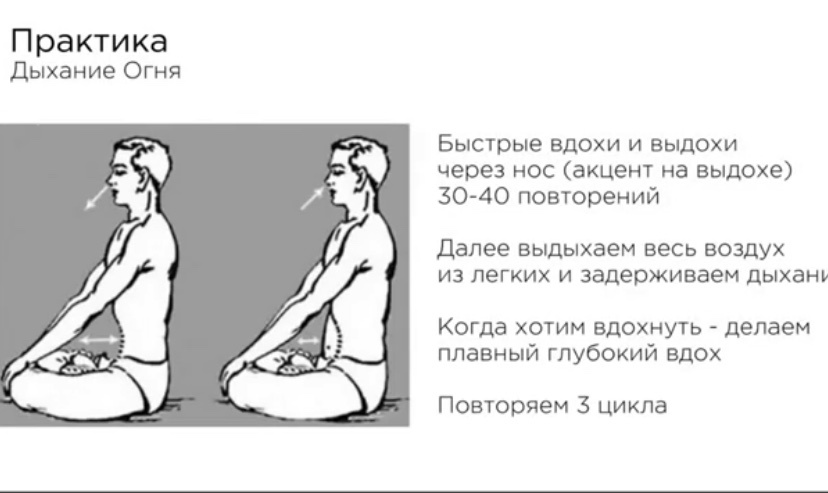

Однажды, я задалась вопросом - почему у людей начинает расти живот? Его как буд-то не естественно распирает?
И получила такой ответ: - страхи, переживания, сомнения, неуверенность в себе, ожидание плохого и другие подобные чувства/эмоции сгенерированные человеком, преобразуются в маленькие сгустки энергии похожие на воздушные шарики и оседают под кожей в районе живота. И в зависимости от того, к какому энергетическому центру они больше относятся (солнечное сплетение и/или низ живота), то там и образуется уплотнение "воздуха".
Раньше это было больше присуще зрелому возрасту, а сейчас все больше проявляется уже и у молодых.
Конечно самым лучшим выходом из этой ситуации, является изменение мышления. Надо перестать создавать негативные эмоции - думать позитивно, довериться течению жизни, принять других и верить в себя.Но далеко не у всех так пока получается. Поэтому можно помогать себе физически растворять эти "воздушные шарики", делая практики очищения и массаж.
Если раздувает живот не из-за жировых отложений, а от негативных переживаний (одно не исключает другое), то создавая намерение, вы берете энергию из своего же поля и ею трансформируете (растворяете) накопившиеся негативные энергии. А что именно туда откладывается ? Во время этой практики эти мысли/картинки могут проявить себя, вот тогда и задумайтесь, зачем я так думаю/реагирую ? И делайте выбор в пользу позитива... 😊
Сделайте исследование живота.Лежа на спине и расслабив живот, начинайте его прощупывать, вы почувствуете эти шарики под кожей, они иногда очень легко лопаются от нажатия, когда их слишком много. Иногда попадаются довольно крупные 1,5 см в диаметре и больше бывают. Такие достаточно легко перемещаются и их трудно удержать, часто при нажатии вызывают сильные болезненные ощущения. Это не жировая ткань и не воздух в кишечнике, хотя и это тоже способствует увеличению живота.
При этих упражнениях может появиться отрыжка или зевота - это хороший знак! Идет очищение.
Сама практика очищения от накопленных переживаний, которую мне показали:
- Лежа на спине делайте массаж всего живота, прощупывайте его достаточно сильно, находя воздушные шарики подцепляйте их или просто надавливайте на них, растирая пальцами до исчезновения или уменьшения. Делайте это несколько минут.
- Массаж точек переживаний по 30-60 секунд. Массируйте места у основания (крепления) нижних ребер под грудью. Потом массируйте по часовой стрелке двумя руками точку, расположенную по центру тела меду ребрами и пупком. Потом положите обе ладони на низ живота и в различных конфигурациях, достаточно надавливая, поднимайте руки вверх от низа живота до основания ребер и выше по центру грудной клетки до шеи.
- В позе лотоса (или просто сидя) вращение телом спиралевидными движениями вправо, поднимаясь вниманием с каждым вращением от копчика вверх до макушки и через какое-то время влево так же, но опускаясь вниманием вниз. По времени - столько, сколько будет комфортно для вас.
-
В позе лотоса (или просто сидя), делайте учащенное неглубокое дыхание 30 раз (можно 60-90) через нос с резким
сокращением нижней части живота на каждом выдохе.
Вот например, в интернете можно найти описание подобных дыхательных практик 👇👇👇, но не обязательно строго им следовать 🙃.

Можно передвигать акцент сокращения мышц живота (сверху, посередине, внизу) на каждом цикле.
-
Оставаясь в этой же позе, прижмите руки ребром ладоней к животу, чтобы пальцы не соприкасались,
на уровне 5 см ниже ребер грудной клетки. И делайте раскачивающиеся (круговые) наклоны вперед,
так что бы ладони хорошо заходили под ребра и кожа перекатывалась по ним. Вы можете почувствовать,
как лопаются воздушные шарики. Передвигайте ладони, надавливая в разные места на животе, продолжая раскачиваться,
вы почувствуете, где рукам надо задержаться.
По времени - столько, сколько будет комфортно для вас.
-
Протяжка вверх.
На длинном вдохе с самого низа живота, сокращая нижние мышцы, тяните энергию с гортанным звуком вверх и выдох через макушку головы. Так 3 раза.
В завершении сделайте глубокий вход и медленный выдох.
Делайте из этих упражнений то, что вам откликается 🔥🔥🔥 и тогда, когда хочется этим заняться. Например, когда появилось чувство тяжести в животе и это не проходит в течение часа. Тогда наступил отличный момент сделать упражнения, после практики вы чувствуете облегчение.
Всем удачи!
С любовью.
🙏🙏🙏